Apostilas
14 de outubro de 2025
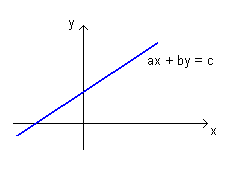
No plano cartesiano, toda reta tem equação do tipo \[ ax+by=c. \]
Já estamos acostumados com isso.
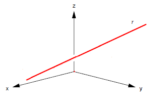
Qual é a equação de uma reta no espaço?
Faz sentido pensar que esta reta poderia ter uma equação do tipo \(ax+by=c\) ou, generalizado, do tipo \(ax+by+cz=d\).
Não. Pois uma reta é um objeto 1-dimensional. E cada uma destas equações possuem duas variáveis livres.
No espaço, no sistema de coordenadas \(xyz\), desenhe o conjunto solução da equação \(x+y=2\).
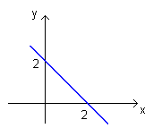
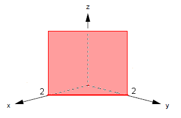
Como \(z\) é variável livre, \(x+y=2\) é um plano paralelo ao eixo \(z\).
Sejam \(P_0=(x_0,y_0,z_0)\) e \(P_1=(x_1,y_1,z_1)\) dois pontos no espaço. Vamos determinar a equação dos pontos \(P=(x,y,z)\) que pertencem à reta \(\overleftrightarrow{P_0P_1}\).
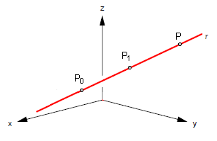
\(P\) pertence à reta \(r\) se os vetores \(\overrightarrow{P_0P}\) e \(\overrightarrow{P_0P_1}\) são paralelos.
Ou seja, se estes vetores são múltiplos escalares: \(\overrightarrow{P_0P} = t\overrightarrow{P_0P_1}\) para algum \(t\in\mathbb{R}\).
Isto é, \(P - P_0 = t\overrightarrow{P_0P_1}\), ou ainda
\[P = P_0 + t\overrightarrow{P_0P_1}.\]
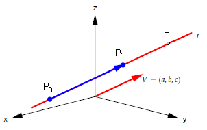
Se \(V=\overrightarrow{P_0P_1}\), então \(P= P_0 + tV\) (movimento retilíneo uniforme).
Esta é a equação paramétrica da reta \(r\).
Neste caso, \(V\) é um vetor diretor de \(r\).
Se \(P=(x,y,z)\), \(P_0=(x_0,y_0,z_0)\) e \(V=(a,b,c)\), então
\[\boxed{P= P_0 + tV}\]
significa que
\[(x,y,z) = (x_0,y_0,z_0) + t(a,b,c)\]
\[\begin{cases} x = x_0 + ta\\ y = y_0 + tb\\ z = z_0 + tc \end{cases}\]
\[\boxed{P= P_0 + tV}\]
\[\begin{cases} x = x_0 + ta\\ y = y_0 + tb\\ z = z_0 + tc \end{cases}\]
A equação paramétrica de uma reta não é única.
A equação paramétrica de uma reta \(r\) faz uma associação biunívoca entre um ponto \(P\) da reta e um número real \(t\).
\[\boxed{P= P_0 + tV}\]
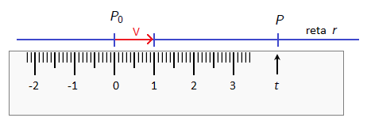
Com essa equação, podemos ver a reta \(r\) como uma régua graduada, uma reta numérica, ou um eixo numérico orientado. O vetor diretor \(V\) dá a direção e a unidade de medida dessa reta numérica.
Considere o ponto \(P=(4,-2,11)\) e a reta \(r\) de equação \[ (x,y,z) = (1,-1,1) + t(3,1,2). \] Determine a reta \(s\) que passa por \(P\) e que é perpendicular e concorrente com \(r\).
O vetor diretor de \(r\) é \(V=(3,1,2)\). Procuramos um ponto \(Q\in r\) tal que \(\vec{PQ}\perp V\); ou seja, \(\left<\vec{PQ}, V\right>=0\).
\[ Q=(1,-1,1)+t(3,1,2)=(1+3t,-1+t,1+2t) \mbox{ e }\vec{PQ}=(-3+3t,1+t,-10+2t). \] Logo, \[ 0=\left<\vec{PQ}, v\right>=\left<(-3+3t,1+t,-10+2t),(3,1,2)\right>=14t-28. \] Daí, \(t=2\) e \(Q=(1,-1,1)+2(3,1,2)=(7,1,5)\).
Logo \(Q=(7,1,5)\) e um vetor diretor de \(s\) é \(\vec{QP}=(3,3,-6)=3(1,1,-2)\). Assim, a reta procurada é \[ (x,y,z)=(4,-2,11)+u(1,1,-2), u∈ℝ, \] com \(\left<V,(1,1,-2)\right>=3+1-4=0\) (perpendicular) e concorrente em \(Q\).
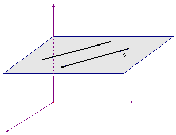
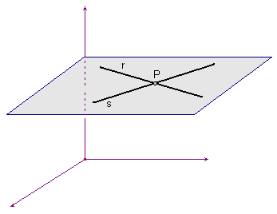
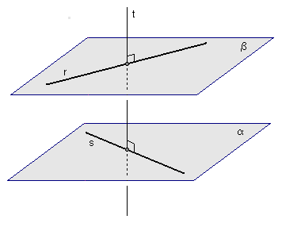
Retas paralelas e concorrentes são coplanares.
Retas reversas sempre moram em planos paralelos distintos \(\alpha\) e \(\beta\) tais que \(s\subset\alpha\) e \(r\subset\beta\).
Sempre existe uma reta \(t\) perpendicular comum a \(r\) e a \(s\) interceptando \(r\) e \(s\).
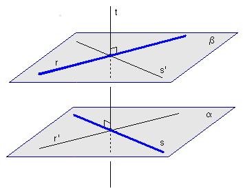
Observe a reta \(r'\) paralela a \(r\) traçada pelo ponto \(s \cap t\) e também observe a reta \(s'\) paralela a \(s\) traçada por \(r \cap t\).
Sejam \(r\) e \(s\) retas reversas, seja \(t\) a reta perpendicular comum e sejam \(P = r \cap t\) e \(Q = s \cap t\). Então
\[\operatorname{dist}(r,s) = \operatorname{dist}(P,Q)\]
Esta é a menor distância entre um ponto de \(r\) e um ponto de \(s\).
Temos \[ r: (x,y,z) = (3,5,3) + t(1,2,1) \mbox{ e } s: (x,y,z) = (1,2,3)+ u(1,2,1),\ t, u ∈ ℝ. \]
Distância entre duas retas paralelas.
O vetor diretor das duas retas é \(V=(1,2,1)\).
Seja \(A=(3,5,3)\in r\), \(C=(1,2,3)\in s\) com \(\vec{AC}=(-2,-3,0)\). Por Teorema de Pitágoras: \[ \|\vec{AC}\|^2=\operatorname{dist}(r,s)^2+\|\operatorname{proj}_V(\vec{AC})\|^2 \]
Temos que \[ \operatorname{proj}_V(\vec{AC})=\frac {\left<V,\vec{AC}\right>}{\|V\|^2}V=-8/6V=(-4/3,-8/3,-4/3) \Rightarrow \|\operatorname{proj}_V(\vec{AC})\|^2=32/3. \]
Logo \[ \operatorname{dist}(r,s)^2=\|\vec{AC}\|^2-\|\operatorname{proj}_V(\vec{AC})\|^2 =13-\frac{32}{3} =\frac{7}3 \textrm{ e } \operatorname{dist}(r,s)=\frac{\sqrt 7}{\sqrt 3}. \]
Considere a reta \(r\) que passa pelos pontos \(A=(5,4,1)\) e \(B=(7,5,2)\). Também considere a reta \(s\) que passa pelos pontos \(P=(0,1,0)\) e \(Q=(-3,-2,3)\).
Considere a reta \(r\) que passa pelos pontos \(A=(4,-2,1)\) e \(B=(5,-3,2)\). Também considere a reta \(s\) que passa pelos pontos \(C=(1,7,4)\) e \(D=(-7,-9,8)\).
Sejam \(A=(4,-2,1)\), \(B=(5,-3,2)\), \(C=(1,7,4)\) e \(D=(-7,-9,8)\).
Distância e pontos de mínima distância: Toma pontos genêricos \(P\in r\) e \(Q\in S\): \[\begin{align*} P&=(4+t,-2-t,1+t)\\ Q&=(1+2u,7+4u,4-u)\\ \vec{PQ}&=(-3+2u-t,9+4u+t,3-u-t). \end{align*}\]
Ora, queremos que \(\vec{PQ}\) seja perpendicular a \(V_r\) e a \(V_s\): \[\begin{align*} 0&=\left<\vec{PQ},V_r\right>=\left<(-3+2u-t,9+4u+t,3-u-t),(1,-1,1)\right>=-9-3u-3t\\ 0&=\left<\vec{PQ},V_s\right>=\left<(-3+2u-t,9+4u+t,3-u-t),(2,4,-1)\right>=27+21u+3t \end{align*}\]
Obtivemos o sistema \[\begin{align*} 0&=-9-3u-3t\\ 0&=27+21u+3t \end{align*}\] A solução do sistema é \(t=-2\) e \(u=-1\).
Substituindo, \(t=-2\) e \(u=-1\), \[\begin{align*} P &= (4+t,-2-t,1+t)= (2,0,-1)\\ Q &= (1+2u,7+4u,4-u)= (-1,3,5)\\ PQ &= Q-P = (-3,3,6) \perp V_r, V_s. \end{align*}\]
Distância: \(‖PQ‖ = \sqrt{9+9+36} = 3\sqrt 6\).
Um plano pode ser dado de várias maneiras:
Algumas destas situações podem ser caracterizadas pelo produto escalar; outras, pelo produto vetorial.
Vamos começar discutindo a última situação.
Seja dado um ponto \(P_0=(x_0,y_0,z_0)\) e um vetor \(N\neq\vec{0}\).
Existe um único plano \(\alpha\) que passa por \(P_0\) e que é ortogonal ao vetor \(N\).
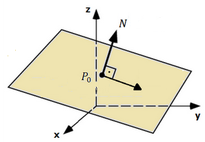
Nesta situação \(N\) é um vetor normal ao plano.
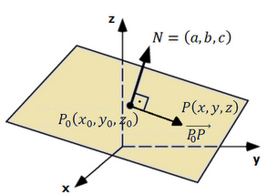
Um ponto \(P=(x,y,z)\) pertence a este plano se os vetores \(N=(a,b,c)\) e \(\overrightarrow{P_0P}=(x-x_0,\,y-y_0,\,z-z_0)\) são perpendiculares: \[ \langle N,\overrightarrow{P_0P}\rangle = 0 \;\Longleftrightarrow\; a(x-x_0)+b(y-y_0)+c(z-z_0)=0. \]
Equivalente a \[ ax+by+cz = a x_0 + b y_0 + c z_0. \]
Do item anterior, o lado direito é uma constante \(d=a x_0 + b y_0 + c z_0\). Assim, um ponto \(P=(x,y,z)\) pertence ao plano se e somente se
\[\boxed{\;ax + by + cz = d\;}\]
Determine a equação geral do plano que passa por \(P_0=(2,3,-4)\) e é ortogonal ao vetor \(N=(5,-2,3)\).
Solução. A equação geral do plano é da forma \(ax+by+cz=d\), em que os coeficientes \(a\), \(b\) e \(c\) são as coordenadas de um vetor normal ao plano. Neste caso, a equação tem a forma \(5x-2y+3z=d\). Substituindo o ponto \(P_0=(2,3,-4)\), obtemos \(d\):
\[5\cdot 2 - 2\cdot 3 + 3\cdot (-4) = d \;\Rightarrow\; d=-8.\]
Logo, a equação do plano é \(\boxed{\;5x-2y+3z=-8\;}.\)
\[\boxed{\;ax+by+cz=d\;}\]
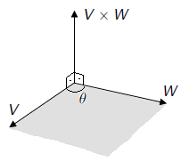
O produto vetorial \(V\times W\) é caracterizado por:
Se
\[\begin{aligned} V &= (v_1,v_2,v_3) = v_1\,\vec{i}+v_2\,\vec{j}+v_3\,\vec{k},\\ W &= (w_1,w_2,w_3) = w_1\,\vec{i}+w_2\,\vec{j}+w_3\,\vec{k}, \end{aligned}\]
então, usando as propriedades do produto vetorial,
\[V\times W=\big(\,v_2w_3-v_3w_2\,,\; v_3w_1-v_1w_3\,,\; v_1w_2-v_2w_1\,\big).\]
É mais fácil memorizar pelo determinante simbólico
\[ V\times W=\det\!\begin{bmatrix} \vec{i} & \vec{j} & \vec{k}\\ v_1 & v_2 & v_3\\ w_1 & w_2 & w_3 \end{bmatrix}. \]
Exemplo 1. Determine a equação do plano que passa por \(A=(-1,2,1)\) e contém a reta
\[(x,y,z)=(2,1,3)+t(-1,3,1).\]
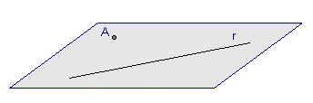
Observações importantes:
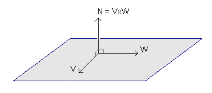
No exemplo, \(A=(-1,2,1)\) e \(r:(x,y,z)=(2,1,3)+t(-1,3,1)\).
O ponto \(B=(2,1,3)\) pertence a \(r\) e os vetores \(\overrightarrow{BA}=(-3,1,-2)\) e \(V_r=(-1,3,1)\) são paralelos ao plano. Então
\[ N=\overrightarrow{AB}\times V_r= \begin{vmatrix} \vec{i}&\vec{j}&\vec{k}\\ -3&1&-2\\ -1&3&1 \end{vmatrix} =(7,5,-8). \]
Logo, o plano tem equação \(7x+5y-8z=d\).
Como queremos que \(r\) esteja contida no plano, todos os pontos de \(r\) devem satisfazer a equação do plano. Um ponto genérico de \(r\) é dado por
\[x=2-t,\quad y=1+3t,\quad z=3+t.\]
Substituindo em \(7x+5y-8z=d\):
\[7(2-t)+5(1+3t)-8(3+t)=d\;\Rightarrow\; d=-5.\]
Portanto, o plano é \(\boxed{\;7x+5y-8z=-5\;}.\)
Exemplo 4. Determine a equação geral do plano que contém
\[A=(2,3,3),\quad B=(4,1,3),\quad C=(2,5,1),\quad D=(3,3,2).\]
Um vetor normal pode ser
\[N=\overrightarrow{AB}\times\overrightarrow{AC}=\begin{vmatrix} \vec{i}&\vec{j}&\vec{k}\\ 2&-2&0\\ 0&2&-2 \end{vmatrix}=(4,4,4).\]
Logo, a equação é \(4x+4y+4z=d\). Substituindo \(B=(4,1,3)\), \(d=16+4+12=32\), ou seja, \(4x+4y+4z=32\), que simplifica para \(\boxed{x+y+z=8}\).
Exemplo 5. Determine a equação geral do plano que contém
\[A=(1,1,1),\quad B=(-2,3,3),\quad C=(2,3,1).\]
Um ponto \(P=(x,y,z)\) pertence ao plano se os vetores são coplanares:
\[\overrightarrow{AP}=(x-1,y-1,z-1),\quad \overrightarrow{AB}=(-3,2,2),\quad \overrightarrow{AC}=(1,2,0).\]
Daí,
\[\det\!\begin{bmatrix} x-1&y-1&z-1\\ -3&2&2\\ 1&2&0 \end{bmatrix}=0.\]
Expandindo, obtém-se \(\boxed{\;2x-y+4z=5\;}.\)
Exemplo 6. Verifique se as retas são paralelas, concorrentes ou reversas. Se possível, determine o plano que contém as duas retas.
\[\begin{cases} x=3+t\\ y=3+2t\\ z=4+t \end{cases} \qquad\qquad \begin{cases} x=-1+2s\\ y=-2+s\\ z=3-s \end{cases}\]
Exemplo 7.
Encontre a equação paramétrica da reta \(r\) que passa por \(A=(3,5,3)\) e \(B=(1,1,1)\).
Considere \(s:(x,y,z)=(1,2,3)+t(1,2,1)\). Verifique se \(r\) e \(s\) são paralelas, reversas ou concorrentes.
Ache, se possível, uma equação geral do plano que contém as retas \(r\) e \(s\).
Considere os pontos \(A=(-1,3,2)\) e \(B=(2,1,6)\).
Considere a reta \(r\) de equação paramétrica \((x,y,z) = (-7,4,9) + t(-2,1,2)\) e o ponto \(A=(7,4,5)\).
Obs: neste exemplo aprendemos a calcular a projeção ortogonal de um ponto em uma reta.
Considere o plano \(\alpha\) de equação \(x-2y+3z=4\) e o ponto \(A=(2,8,-8)\).
Obs: neste exemplo aprendemos a calcular a projeção ortogonal de um ponto em um plano.
Considere as retas paralelas
\[r:\ (x,y,z) = (-6,3,-2) + t(3,-1,2)\]
\[s:\ (x,y,z) = (-3,30,-14) + s(3,-1,2)\]
Considere as retas
\[r:\ (x,y,z) = (7,2,-2) + t(-3,0,1)\] \[s:\ (x,y,z) = (-1,1,2) + s(2,1,-2)\]
Obs: neste exemplo aprendemos a calcular o ângulo entre duas retas.
Considere as retas
\[r:\ (x,y,z) = (-1,-1,4) + t(1,1,-1)\] \[s:\ (x,y,z) = (1,3,7) + s(-2,0,1)\]
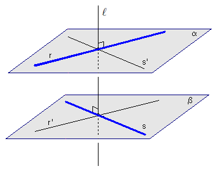
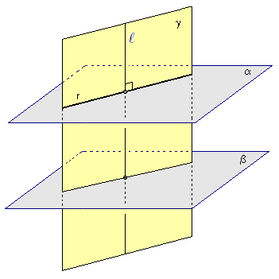
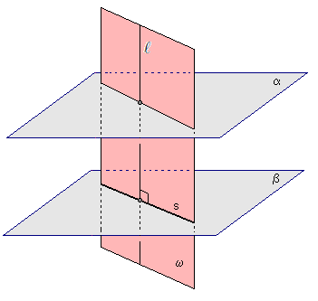
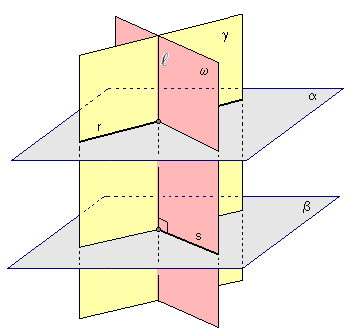
Considere o plano \(\alpha\) de equação \(2x+y-z=4\) e a reta \(r\) de equação \((x,y,z) = (0,3,-4) + t(1,-1,2)\).
Obs: neste exemplo aprendemos a calcular o ângulo entre uma reta e um plano.
Considere o plano \(\alpha\) de equação \(x-y+z=1\) e a reta \(r\) de equação \((x,y,z) = (0,3,1) + t(2,-1,-3)\).
Considere o plano \(\alpha\) de equação \(x+2y-z=3\) e a reta \(r\) de equação \((x,y,z) = (2,1,1) + t(2,1,4)\).
Considere os planos
\[\alpha:\ 2x-y+z=1\] \[\beta:\ 4x-2y+2z=5\]
Considere os planos
\[\alpha:\ x-y+3z=1\] \[\beta:\ 2x-3y-z=2\]